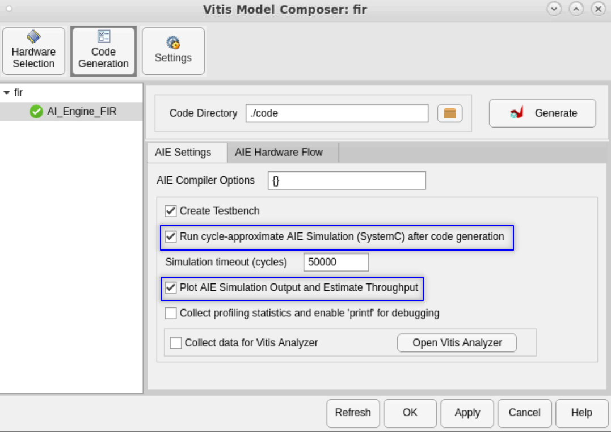
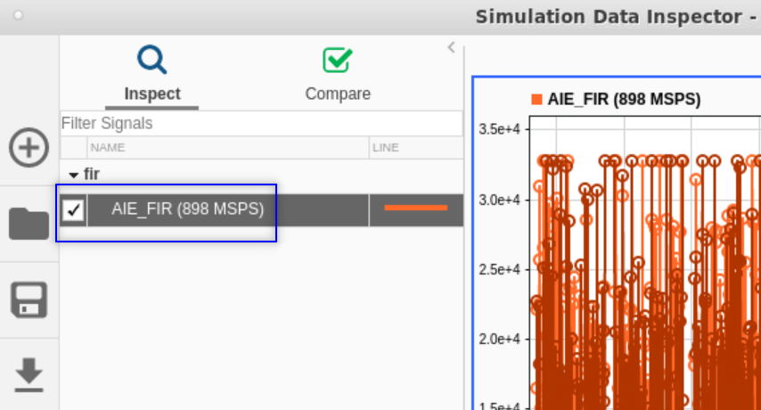
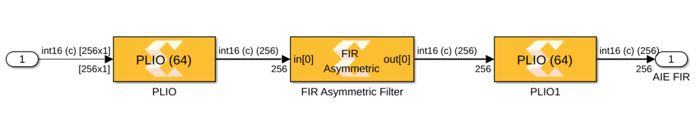
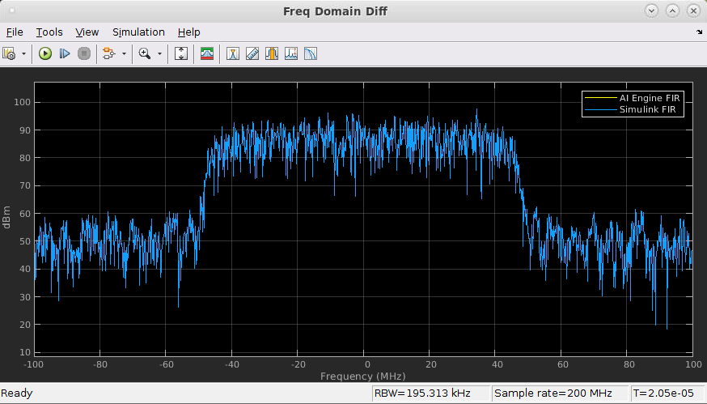
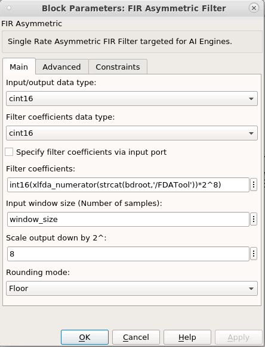

This example demonstrates using the AI Engine 'FIR Asymmetric Filter' block in Model Composer and comparing the results to the Simulink FIR block.
 To estimate the throughput for this design, you should setup the Vitis Model Composer Hub block as below before clicking Generate.
To estimate the throughput for this design, you should setup the Vitis Model Composer Hub block as below before clicking Generate.

 After simulation is done, the Simulink Data Inspector will show the estimated throughput.
After simulation is done, the Simulink Data Inspector will show the estimated throughput.

 The 64 bit wide PLIO blocks with a PL frequency of 500 MHz at the input and output of the filter block are needed to achieve the highest throughput possible. This means a 64 bit data transfer (two 16-bit complex inputs) can be transferred from PL to AIE at each PL clock, for a total throughput of upto 1 GSPS.
The 64 bit wide PLIO blocks with a PL frequency of 500 MHz at the input and output of the filter block are needed to achieve the highest throughput possible. This means a 64 bit data transfer (two 16-bit complex inputs) can be transferred from PL to AIE at each PL clock, for a total throughput of upto 1 GSPS.

 The FIR Asymmetric block has two parameters that you can adjust to achieve a desired throughput. The Input Window Size and the Number of Cascade Stages. The number of AI Engine tiles used in the implementation is equal to the Number of Cascade Stages. The table below gives you an idea of how the throughput changes for this design as you change these parameters:
The FIR Asymmetric block has two parameters that you can adjust to achieve a desired throughput. The Input Window Size and the Number of Cascade Stages. The number of AI Engine tiles used in the implementation is equal to the Number of Cascade Stages. The table below gives you an idea of how the throughput changes for this design as you change these parameters:
| Input Window Size | Cascade Length | Throughput |
|---|---|---|
| 256 | 1 | 296 Msps |
| 256 | 4 | 674 Msps |
| 512 | 4 | 799 Msps |
| 1024 | 4 | 898 Msps |
 The larger the InputWindowSize the larger is the latency of the filter.
The larger the InputWindowSize the larger is the latency of the filter.
 The CascadeLength_ trades throughput for the number of AI Engine kernels used by the filter. For details, refer to the AI Engine FIR function documentation.
The CascadeLength_ trades throughput for the number of AI Engine kernels used by the filter. For details, refer to the AI Engine FIR function documentation.
 Note that the Spectrum Analyzer block accepts a Variable Size Signal as input. Likewise, Simulink Scope block and Display block also accept variable size signals as inputs.
Note that the Spectrum Analyzer block accepts a Variable Size Signal as input. Likewise, Simulink Scope block and Display block also accept variable size signals as inputs.
 In this example, the output variable size signal is always full, i.e. the number of samples in the signal is equal to the maximum size of the variable size signal (in this case 256). We can monitor this using Simulink width block and a scope. Note that the number shown on the width block is the maximum size of the input signal while the output of the block is the number of samples in the variable size signal.
In this example, the output variable size signal is always full, i.e. the number of samples in the signal is equal to the maximum size of the variable size signal (in this case 256). We can monitor this using Simulink width block and a scope. Note that the number shown on the width block is the maximum size of the input signal while the output of the block is the number of samples in the variable size signal.
:warning: If the number of samples in the variable size signal is not equal to the maximum number of samples of the variable size signal, directly attaching the variable size signal to the spectrum analyzer will result in a misleading output (zeros will be inserted to fill the missing samples). For cases where the variable size signal is not full, use the Variable Size Signal to Workspace block to move the data to the workspace and then post process the data.
 Note how you can design the filter using the Filter Design and Analysis tool and directly pass the resulting taps to the AI Engine 'FIR Asymmetric Filter' block.
Note how you can design the filter using the Filter Design and Analysis tool and directly pass the resulting taps to the AI Engine 'FIR Asymmetric Filter' block.

The image below depicts the output of DSPlib AI Engine FIR in comparison with the Simulink FIR block. They completely match.

 In order for the AIE and Simulink outputs to completely match, it is necessary to set the data types on the Discrete FIR Filter block as follows:
In order for the AIE and Simulink outputs to completely match, it is necessary to set the data types on the Discrete FIR Filter block as follows:

These settings match the saturation behavior, coefficient width, output width, and accumulator width used by the AIE FIR Asymmetric block.
 Also note the "Scale output down by 2^" setting (16) on the FIR Asymmetric Filter block. This is necessary to shift the AIE FIR output (32 bits wide) to fit in the desired cint16 output data type. To match the AIE and Simulink outputs, we need to add to the Simulink output a Gain block that performs the same scaling operation.
Also note the "Scale output down by 2^" setting (16) on the FIR Asymmetric Filter block. This is necessary to shift the AIE FIR output (32 bits wide) to fit in the desired cint16 output data type. To match the AIE and Simulink outputs, we need to add to the Simulink output a Gain block that performs the same scaling operation.

To achieve throughput over 1GHz, you should use the FIR block Super Sample Rate capability. Take a look at this example.
Copyright 2022 Advanced Micro Devices, Inc.
Licensed under the Apache License, Version 2.0 (the "License");
you may not use this file except in compliance with the License.
You may obtain a copy of the License at
http://www.apache.org/licenses/LICENSE-2.0
Unless required by applicable law or agreed to in writing, software
distributed under the License is distributed on an "AS IS" BASIS,
WITHOUT WARRANTIES OR CONDITIONS OF ANY KIND, either express or implied.
See the License for the specific language governing permissions and
limitations under the License.